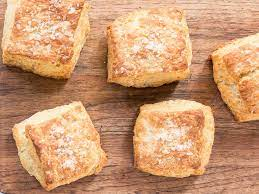

Nancy Silverton's Biscuits Recipe

Description
This recipe is my absolute favorite for flaky, moist biscuits. Make sure you throw the butter needed into the freezer first before putting together the rest of the ingredients. It is best to freeze the ingredients ahead of time, and to even make the biscuits a day before you need to bake them off.
Each recipe yields 12 large biscuits
Ingredients
- 5 sticks unsalted butter, frozen, plus more, melted, for brushing
- 5 cups (1lb, 7oz.) all-purpose flour, plus more for dusting
- 2 tbsp. + 2 tsp. baking powder
- 1 tbsp. kosher salt
- 1 tbsp. sugar
- 1 tsp. baking soda
- 2 cups buttermilk, chilled
- Flaky sea salt for topping
Steps
- If you haven't already, throw all the butter into the freezer for roughly 30 minutes.
- Using a box grater, grate the frozen sticks of butter, then throw it back into the freezer for another 30 minutes.
- Combine all dry ingredients and chill in the freezer, or refridgerator if space is limited in your freezer.
- Pull all chilled ingredients out and scrape the butter into the dry ingredients and mix.
- Pour in the buttermilk and mix until it forms a solid dough.
- Scrape the dough into a lightly floured surface and work the dough into about a 10 by 7 inch rectangle.
- Fold the dough two or three times, rotate it, then using a rolling pin, roll the dough out into a 10 by 7 inch rectangle.
- Repeat the folding, turning, and rolling three or four more times, ending with the dough shaped into a 12 by 10 inch rectangle, about a 1/2 inch thick.
- Trim the edges so you have a sharp, clean rectangle, then cut into 12 equal squares/rectangles. If there is excess dough, feel free to freestyle a few extra pieces
- Space the biscuits roughly 2 to 3 inches apart from eachother on a parchment lined baking sheet, and freeze for at least 2 hours, or overnight.
- Heat the oven to 425 degrees. Brush each biscuit with melted butter and sprinkle with sea salt.
- Bake the biscuits for 10 minutes, then rotate the biscuits and lower the oven temperature to 400 degrees and bake for another 10-15 minutes until the biscuits are puffed up and golden brown.
- Transfer the biscuits to a cooling rack and let cool for 5 minutes before serving.
Jump to home